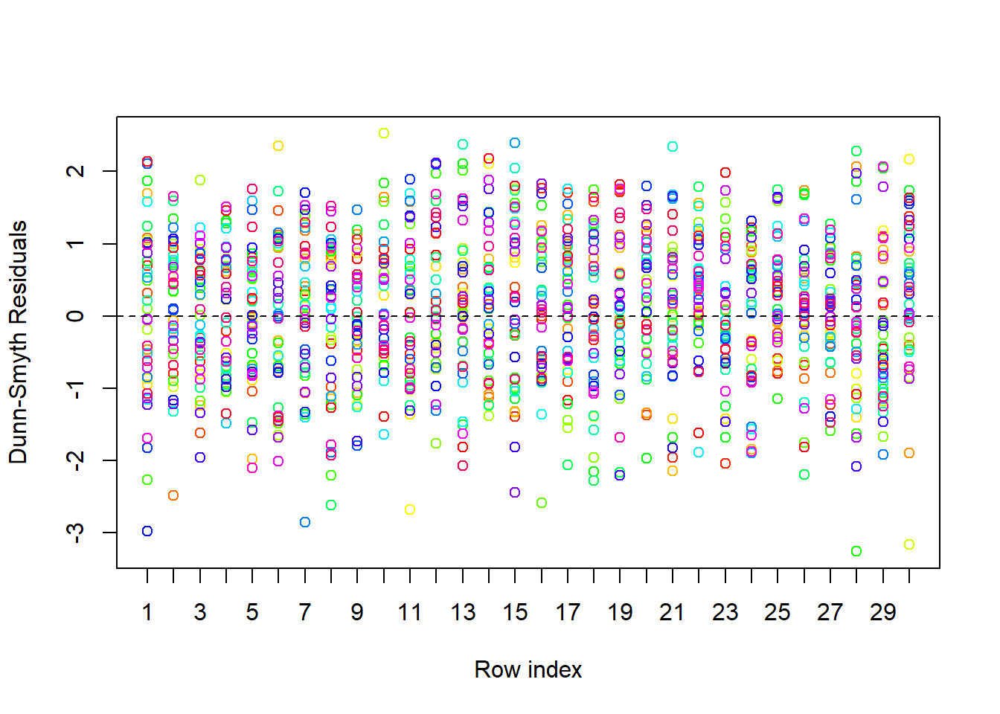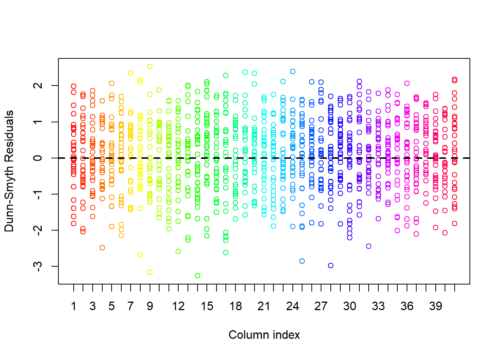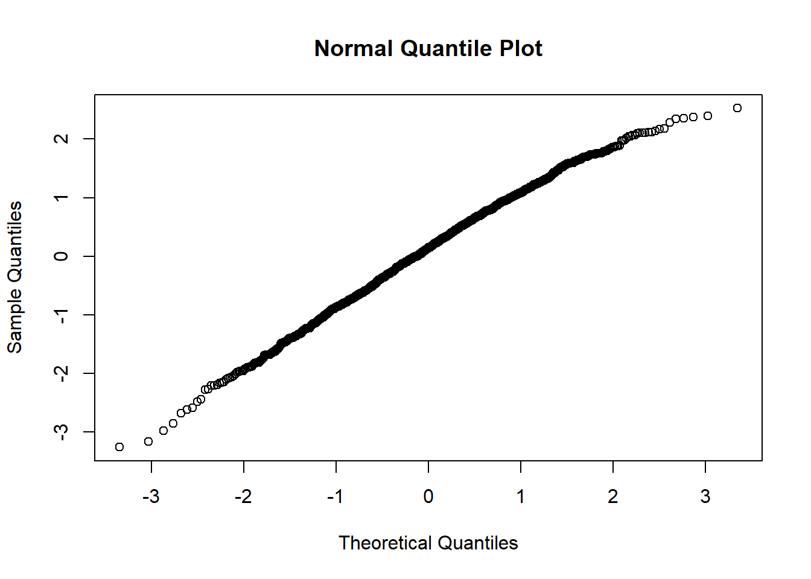
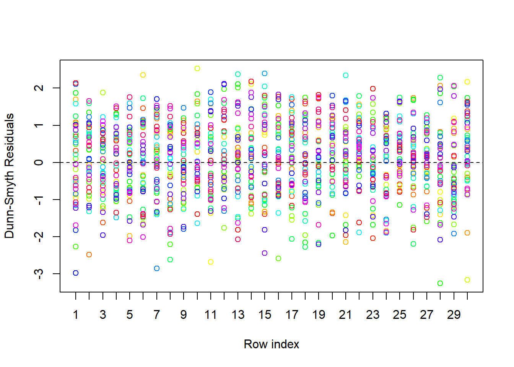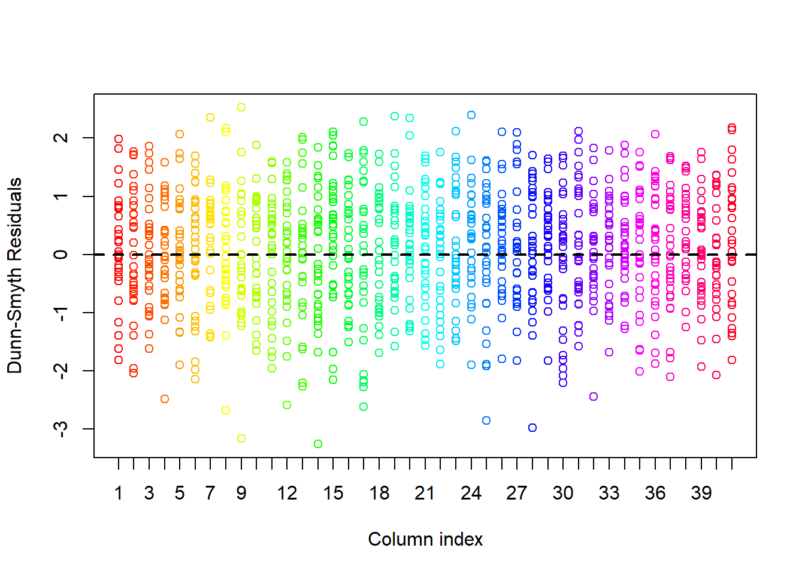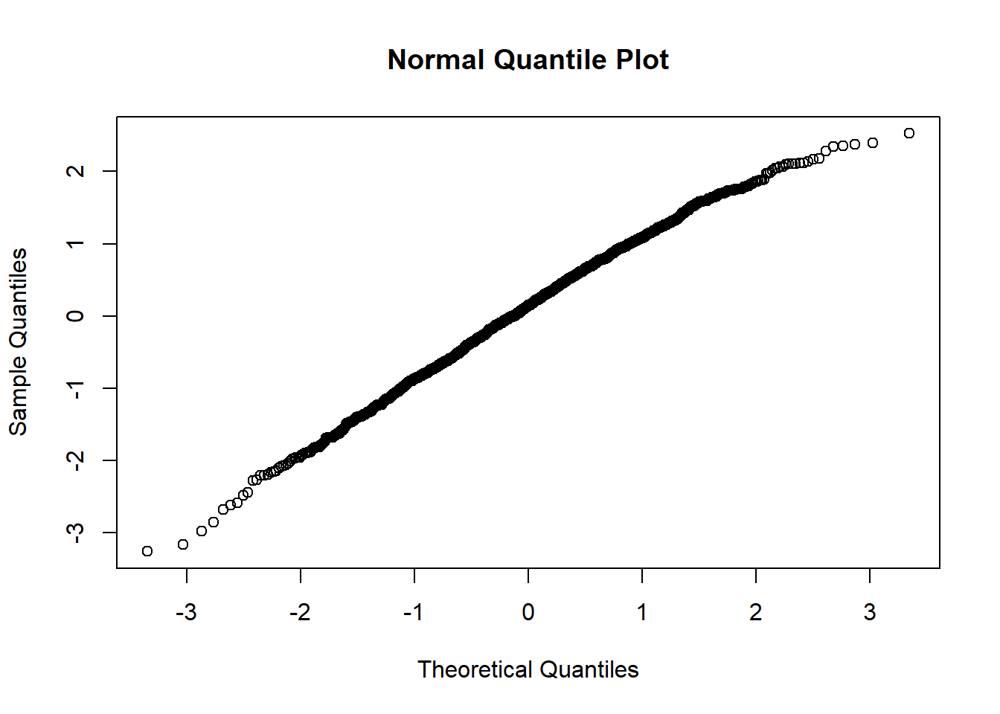In this post we will analyze the antTraits data with generalized linear latent variable models fit with the BORAL R package [@Hui2016]. Elsewhere on the blog you can find an analysis of the same data using mvabund and gllvm.
First of we will setup the analysis by loading the required libraries. If you haven’t already done so, you will need to install the pacman R package before running this code.
pacman::p_load(boral,
corrplot,
mvabund,
readxl,
rjags,
UncertainOrd)The antTraits data set we will analyze here is included mvabund and gllvm so we can load it using the data() function.
data(antTraits)
Y <- antTraits$abund
# scale environmental variables
X <- scale(antTraits$env)
TR = antTraits$traitsFirst we fit the one of simplest model conceivable with BORAL. It is fit with count data so we use a Poisson. From other analyses using mvabund and gllvm, we know that negative binomial distribution is likely better suited for these data. Nonetheless we will start out with a Poisson distribution to see if we also see a fan-shaped pattern in the residuals. The model is unconstrained so we do not need the environmental data (X) or the traits (TR) yet. Further we specify the number of latent variables (2) using the num.lv option in the lv.control argument. The row effect (row.eff) accounts for differences in total site abundance [@Hui2015a]. Another possibility is to fit a model with a random row effect drawn from a normal distribution with mean zero and unknown standard deviation. As n is rather small in this study we stick with the fixed row effects. Lastly, we set save.model to TRUE. This will enable us later to add uncertainty estimates.
fit_uc_po = boral(
y = Y,
family = "poisson",
lv.control = list(num.lv = 2),
row.eff = "fixed",
save.model = T
)Let’s have a look at the summary of this model. First we get the call
summary(fit_uc_po)## $call
## boral.default(y = Y, family = "poisson", lv.control = list(num.lv = 2),
## row.eff = "fixed", save.model = T)
##
## $coefficients
## coefficients
## cols beta0 theta1 theta2
## Amblyopone.australis -0.810 0.495 0.000
## Aphaenogaster.longiceps -2.870 4.169 4.438
## Camponotus.cinereus.amperei -2.353 -0.688 1.087
## Camponotus.claripes 0.455 1.087 0.603
## Camponotus.consobrinus 0.674 -2.714 -0.657
## Camponotus.nigriceps -0.603 2.260 0.696
## Camponotus.nigroaeneus -0.560 0.401 0.551
## Cardiocondyla.nuda.atalanta -5.657 -2.178 -6.028
## Crematogaster.sp..A -3.208 -2.733 5.588
## Heteroponera.sp..A 1.193 -0.027 -0.342
## Iridomyrmex.bicknelli 1.222 -0.784 -0.872
## Iridomyrmex.dromus -1.029 -1.611 0.488
## Iridomyrmex.mjobergi 1.005 1.671 -1.183
## Iridomyrmex.purpureus -0.994 -1.753 4.489
## Iridomyrmex.rufoniger 1.985 -0.739 -1.254
## Iridomyrmex.suchieri 0.410 -1.024 -0.237
## Iridomyrmex.suchieroides -1.213 -1.015 -2.035
## Melophorus.sp..E -1.419 -0.178 -0.258
## Melophorus.sp..F 0.194 1.229 -1.394
## Melophorus.sp..H -0.902 1.730 -1.721
## Meranoplus.sp..A -0.289 1.166 -1.421
## Monomorium.leae 1.342 0.439 0.883
## Monomorium.rothsteini 0.581 1.096 -1.598
## Monomorium.sydneyense -0.697 1.130 -1.870
## Myrmecia.pilosula.complex -1.528 -1.277 -0.817
## Notoncus.capitatus -0.906 0.490 1.507
## Notoncus.ectatommoides 0.324 1.729 -1.737
## Nylanderia.sp..A -0.109 -0.633 -2.526
## Ochetellus.glaber -2.058 -1.009 -2.060
## Paraparatrechina.sp..B -1.712 3.850 1.001
## Pheidole.sp..A 1.899 0.540 -1.230
## Pheidole.sp..B -1.263 2.242 1.173
## Pheidole.sp..E 1.477 -0.513 0.073
## Pheidole.sp..J -2.368 -0.402 -1.375
## Polyrhachis.sp..A -1.451 -0.047 0.499
## Rhytidoponera.metallica.sp..A 1.658 0.351 -1.149
## Rhytidoponera.sp..B 0.308 1.585 -1.466
## Solenopsis.sp..A -2.812 2.241 -1.073
## Stigmacros.sp..A -0.230 0.162 0.697
## Tapinoma.sp..A 0.737 -0.154 -0.098
## Tetramorium.sp..A -0.230 0.564 -1.858
##
## $lvs
## lv
## rows lv1 lv2
## 1 0.005 0.214
## 2 -0.161 0.069
## 3 -0.333 0.143
## 4 -0.227 0.350
## 5 -0.132 0.157
## 6 -0.288 -0.082
## 7 -0.340 -0.490
## 8 -0.369 -0.125
## 9 -0.448 -0.042
## 10 -0.676 0.418
## 11 -0.035 -0.538
## 12 0.433 -0.819
## 13 0.222 -0.805
## 14 -0.241 -0.952
## 15 0.244 -0.984
## 16 0.480 0.649
## 17 0.545 0.682
## 18 -0.132 0.480
## 19 0.263 0.544
## 20 0.551 0.446
## 21 0.040 -0.322
## 22 -0.140 -0.673
## 23 -0.018 0.039
## 24 -0.418 -0.464
## 25 -0.168 -0.675
## 26 -0.567 -0.342
## 27 -0.169 -0.185
## 28 -0.673 -0.586
## 29 -0.393 -0.258
## 30 -0.239 -0.972
##
## $row.coefficients
## $row.coefficients[[1]]
## 1 2 3 4 5 6 7 8 9 10 11
## 0.000 0.806 0.444 0.583 1.174 0.259 0.307 0.387 0.574 0.236 -0.270
## 12 13 14 15 16 17 18 19 20 21 22
## -0.823 -0.512 -0.905 -0.496 0.275 -0.354 0.495 -0.605 0.553 0.792 -0.045
## 23 24 25 26 27 28 29 30
## -0.576 -0.071 0.046 -0.249 0.272 -0.576 -0.368 -0.675
##
##
## $est
## [1] "median"
##
## $calc.ics
## [1] FALSE
##
## $trial.size
## [1] 0 0 0 0 0 0 0 0 0 0 0 0 0 0 0 0 0 0 0 0 0 0 0 0 0 0 0 0 0 0 0 0 0 0 0 0 0 0
## [39] 0 0 0
##
## $num.ord.levels
## [1] 0
##
## $prior.control
## $prior.control$ssvs.index
## [1] -1
##
##
## attr(,"class")
## [1] "summary.boral"plot(fit_uc_po)## NULL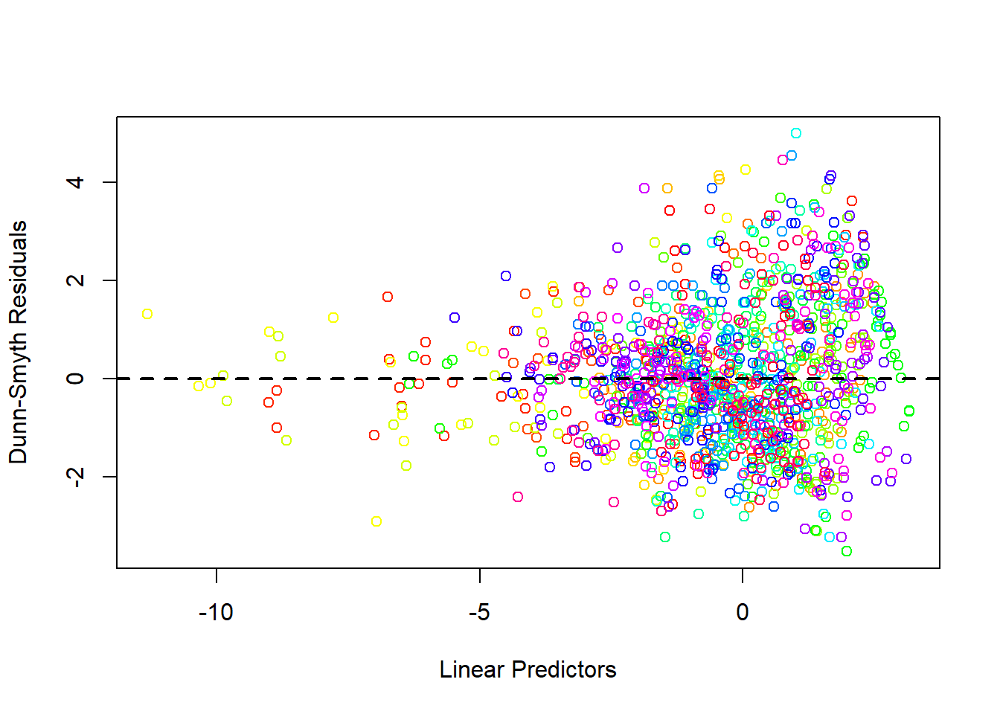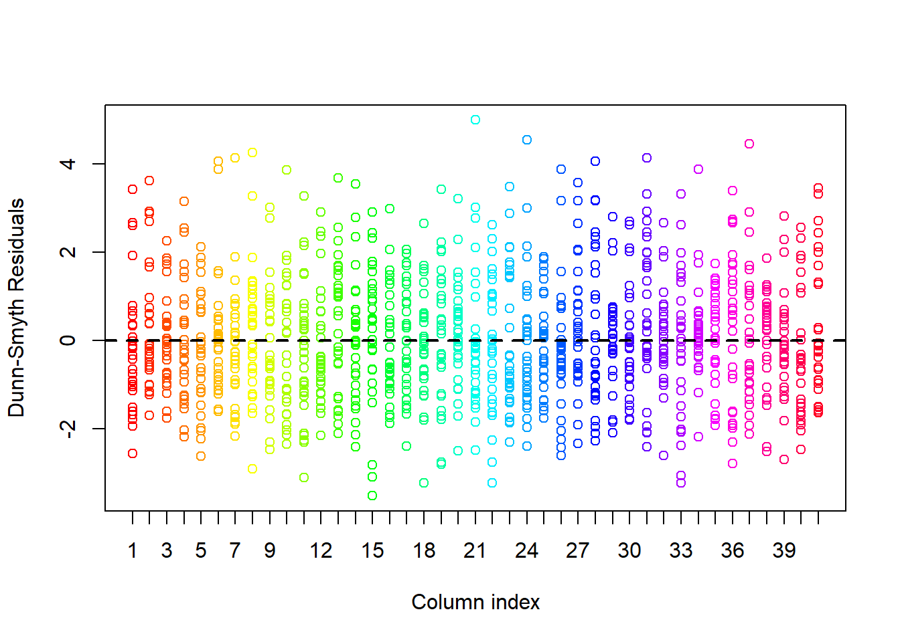
Strong fan, go ahead and fit nb model
fit_unconstrained_nb <- boral(y = Y,
family = "negative.binomial",
lv.control = list(num.lv = 2),
row.eff = "fixed",
save.model = T)plot(fit_unconstrained_nb)## NULL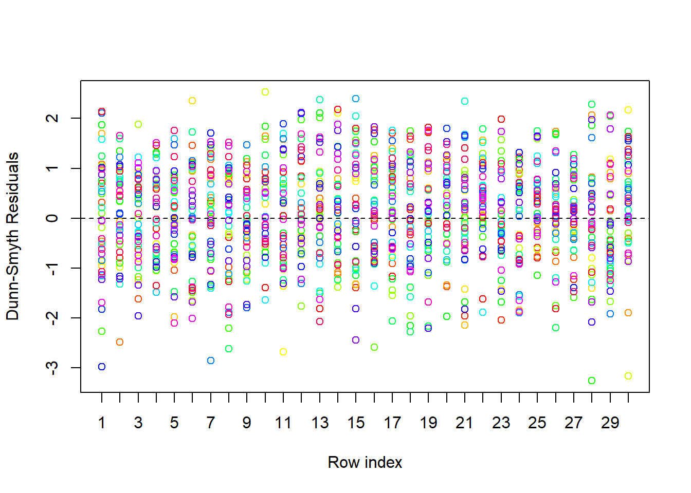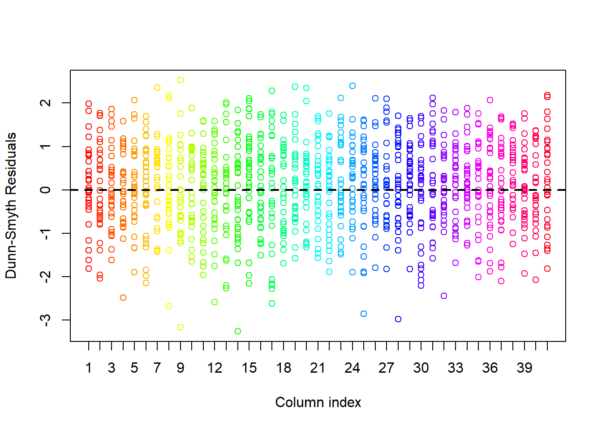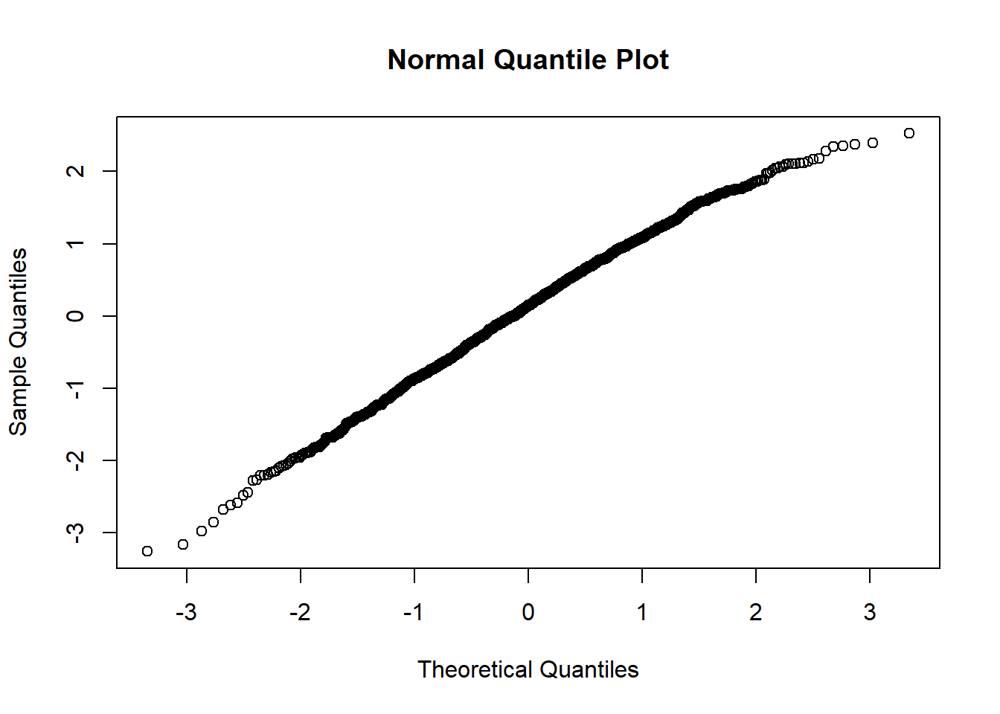
lvsplot(fit_unconstrained_nb)## All latent variable coefficients included in biplot.
lets fit some uncertainty plots.
## uncertainty plots
samples <- get.mcmcsamples(fit_unconstrained_nb)
s1c <- grepl(x = colnames(samples), pattern = "lvs+.+\\d,1")
s2c <- grepl(x = colnames(samples), pattern = "lvs+.+\\d,2")
samples1 <- samples[, s1c]
samples2 <- samples[, s2c]
options(warn = -1)
CredibleViz(
coord1 = samples1,
coord2 = samples2,
type = "scatter",
items = c(4, 21)
)## $plot.obj
fit_constrained_nb <-
boral(
y = Y,
X = X,
family = "negative.binomial",
lv.control = list(num.lv = 2),
save.model = TRUE
)envcors <- get.enviro.cor(fit_constrained_nb)
rescors <- get.residual.cor(fit_constrained_nb)
par(mfrow = c(1,1))
corrplot(
envcors$sig.cor,
type = "lower",
diag = FALSE,
title = "Correlations due to covariates",
mar = c(3,0.5,2,1), tl.srt = 45) corrplot(
rescors$sig.cor,
type = "lower",
diag = FALSE,
title = "Residual correlations",
mar = c(3, 0.5, 2, 1),
tl.srt = 45
)par(mfrow=c(1,1))
lvsplot(fit_constrained_nb)## All latent variable coefficients included in biplot.# Non-numeric variables have to be removed
traits2 = traits[,-c(3,4)]
example_which_traits <- vector("list",ncol(X)+1)
for(i in 1:length(example_which_traits))
example_which_traits[[i]] <- 1:ncol(traits2)
fit_constrained_nb_trait <-
boral(
y = Y,
X = X,
traits = traits2,
which.traits = example_which_traits,
family = "negative.binomial",
lv.control = list(num.lv = 2),
save.model = TRUE
)corrplot(fit_constrained_nb_trait$geweke.diag$geweke.diag$traits.coefs,
is.corr = FALSE)